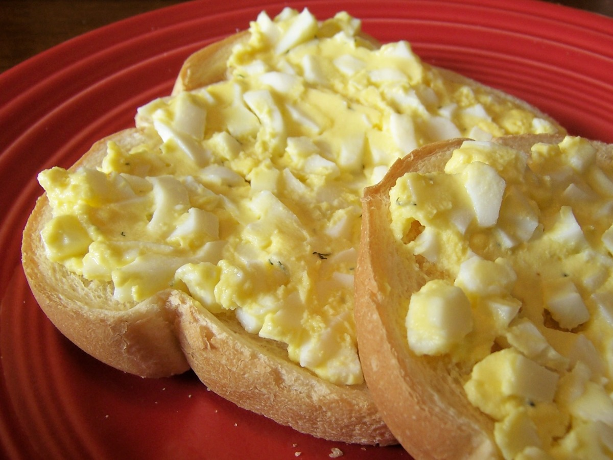

Egg Butter

Description
Egg butter is a Finnish and Estonian cuisine staple,
also known as munavoi in Finnish and munavõi in Estonian.
It's essentially a mixture of soft butter and chopped, hard-boiled eggs.
In Finland, it's traditionally spread on hot Karelian pasties.
Ingredients
- 4 eggs
- ½ cup butter
- 1 pinch cayenne pepper
- 6 drops Worcestershire sauce
Steps
- Place the eggs into a saucepan in a single layer and fill
with water to cover the eggs by 1 inch.
Cover the saucepan and bring the water to a boil over high heat.
Once the water is boiling, remove from the heat and let the eggs stand in the hot water for 15 minutes.
Cool the eggs under cold running water. Peel, and remove yolks from white.
Chop yolks; reserve whites for another use.
- Beat butter in a large bowl until soft and fluffy. Mix in the egg yolks, cayenne
pepper, and Worcestershire sauce. Beat until smooth.
Home